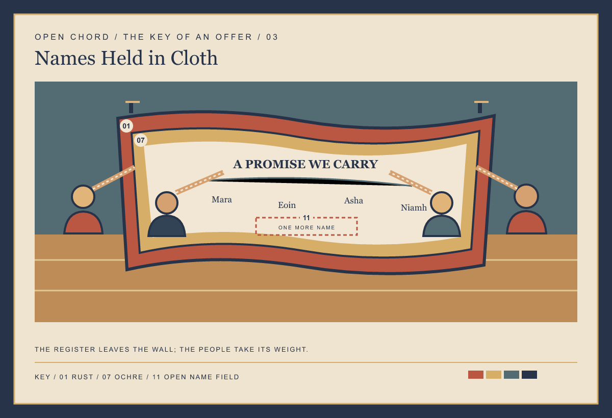
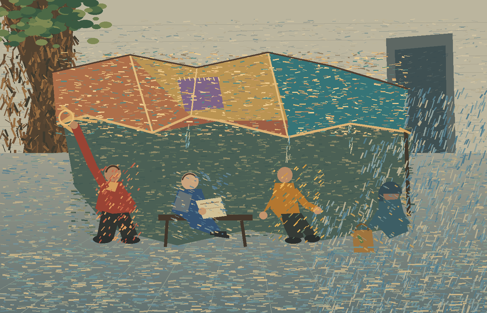

Open Chord
Paintings about how people meet, work, and move through public space.
The Key of an Offer
One invitation at a gate; one place cleared in the rain; one promise carried by those it names.



The Crowd Is a Common Field
A patched shelter gathers a few ordinary uses; its rain edge stays in the picture.
